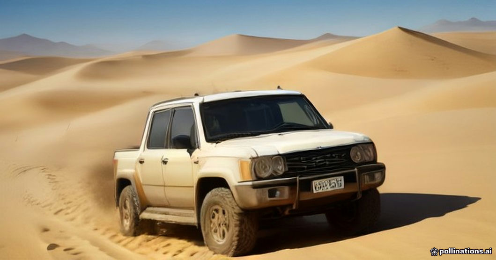

Visiting Erg Chebbi with limited mobility or physical restrictions requires realistic planning rather than optimistic assumptions. The Sahara is inherently rugged, and standard infrastructure across rural Morocco is rarely designed to ADA standards. However, reaching the dunes is entirely achievable when using customized private 4x4 transport and carefully selected desert accommodations.
The main challenges are not the dunes themselves, but the cumulative physical strain of a 9- to 10-hour drive over the High Atlas, uneven pavement at mountain rest stops, and loose sand surrounding camp tents. This breakdown details exact conditions so you or your family members can make an informed decision before booking.
The Drive: Vehicle Entry and Roadside Logistics
Reaching Merzouga from Marrakesh or Fes involves long days on the road. For travelers with mobility constraints, private 4x4 vehicles (such as Toyota Land Cruisers) are mandatory. Minivans and shared tour buses lack the adaptable routing, comfortable suspension, and ground clearance required for direct desert access.
Getting into a 4x4 requires stepping up roughly 40 to 50 centimeters from the ground. If you use a folding wheelchair or mobility walker, it easily fits into the rear cargo hold. The primary challenge along the route is restrooms; while major modern gas stations near Ouarzazate feature flat entrances, many mountain cafes along the Tizi n'Tichka pass have steep concrete steps and tight doorways. Read our guide on [managing restroom stops](/blog-managing-restroom-stops-ouarzazate-to-merzouga) to plan specific stops.
Dune Access: Replacing Camels with 4x4 Transfers
Standard camel treks require significant hip flexibility, core balance, and physical effort during the sharp forward-and-backward pitch when the animal stands up. For guests with back injuries, joint replacements, or limited mobility, riding a camel is strongly discouraged.
Instead, your private 4x4 driver can navigate firm tracks to take you directly to your desert camp. To experience sunset deep in the dunes, drivers can take the vehicle up firm sand ridges where you can enjoy the view directly from your passenger seat or from a sturdy camp chair placed adjacent to the car.
Camp Layouts: Sand Barriers, Steps, and Bathrooms
Loose sand is an immediate barrier for manual and motorized wheelchairs. Narrow wheels sink instantly into Erg Chebbi's erg sand. To navigate desert camps safely, look for mid-range and luxury setups that install heavy woven runner carpets or wooden boardwalks between main dining areas and accommodation tents.
Tent construction also varies. Many luxury tents are raised on wooden platforms requiring two to four steps for entry. When booking, we arrange specific ground-level tents with minimal thresholds. Inside, private ensuite bathrooms provide flushing toilets and hot showers, though built-in grab bars are rare. Review our breakdown of [desert camp bathrooms and hygiene](/blog-desert-camp-bathrooms-and-hygiene-guide) for exact tent interiors.
Alternative: Dune-Edge Hotels vs. Tents
If walking across soft sand to reach a tent poses too high a physical barrier, staying at a hotel on the edge of the dunes in Merzouga is often the best tactical choice. These properties sit on solid ground and directly border the Erg Chebbi dune field.
Dune-edge hotels provide paved walkways, step-free access to dining rooms, air-conditioned rooms, and ground-floor patio views of the dunes. You get the visual experience of the Sahara without the logistical hurdles of night-time sand navigation. See our detailed comparison of [luxury desert camp vs edge hotel](/blog-luxury-desert-camp-vs-edge-hotel).
| Journey Stage | Standard Setup | Limited Mobility Adaptation |
|---|---|---|
| Long-Distance Drive | Shared minibus, fixed stop schedule | Private 4x4 with custom stops and easier step height |
| Restroom Access | Random roadside cafes with stairs | Pre-planned stops at modern gas stations with flat entry |
| Dune Arrival | 45-minute camel ride across soft dunes | Direct 4x4 vehicle transfer over firm sand tracks |
| Camp Navigation | Deep soft sand paths between structures | Camps with heavy carpet runners or wooden walkways |
| Tent Entry | Raised wooden deck with 2-4 steps | Ground-level tent frame with low wooden threshold |

Illustration, not a photograph — for the real thing, you'll have to stand on the ridge yourself.
Quick answers
A few follow-up questions travelers ask about this.
Can standard manual wheelchairs roll on Sahara sand?
No. Standard narrow wheelchair tires sink immediately into soft dune sand. Wheelchairs can only roll on hard-packed dirt roads or heavy carpet/wooden pathways within camps.
Are public restrooms on the Marrakesh-to-Merzouga route ADA accessible?
True ADA-compliant restrooms are extremely rare outside major modern service stations near Ouarzazate and Errachidia. Most mountain stops have narrow doors and 1 to 3 entryway steps.
Can CPAP machines be powered overnight in desert camps?
Yes, provided you book a luxury camp with 24/7 generator or solar battery power. Always inform your operator in advance. See our guide on CPAP machines and electronics in desert camps for details.
Planning your own route?
Tell us your dates and what matters to you — we'll answer with a straight recommendation, not a brochure.
Send an inquiry See the itineraries